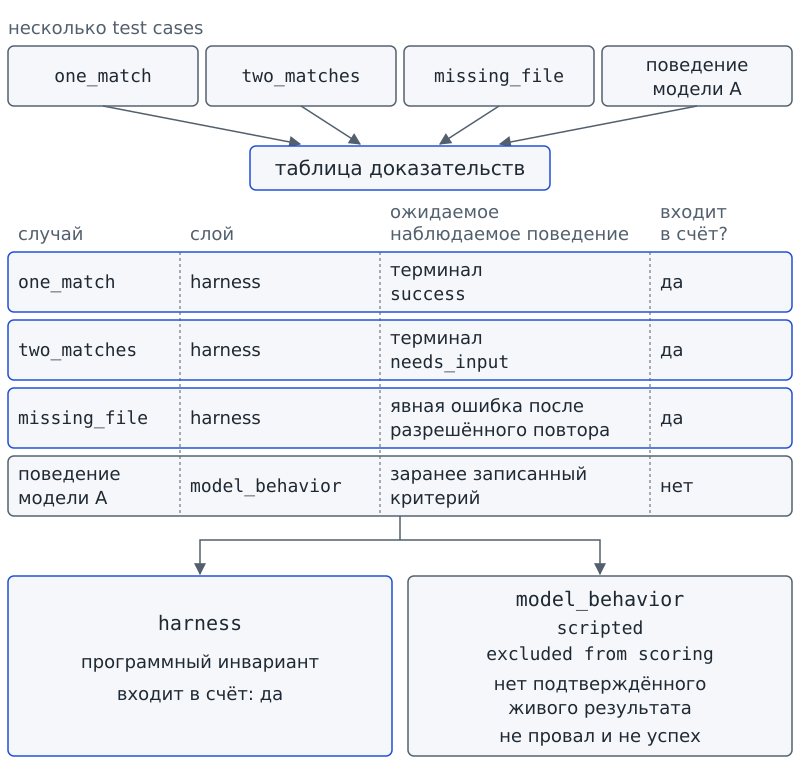
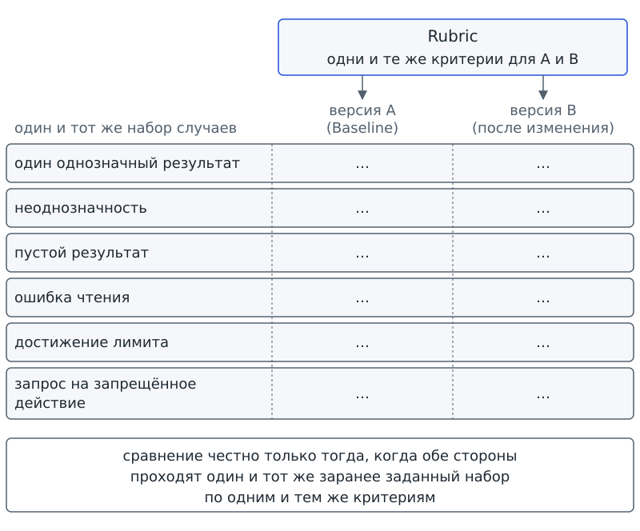

Глава 11. Тесты и evals: как доказать качество не одним удачным запуском?¶
С чего всё началось¶
До Фестиваля науки осталось несколько дней. Программа «Дежурный» подготовила статус-сводку проектного бюро: правильно назвала заблокированную задачу, указала следующий шаг и не включила лишних подробностей. Аня показала результат команде и сказала, что теперь можно считать систему готовой к проверочной работе.
Марк не спорил. Он положил рядом ещё три карточки: в одной две задачи подходили под один запрос, в другой поиск ничего не находил, а в третьей человек просил выполнить действие, которого системе не разрешали. Потом он спросил: «Мы знаем, что один раз получилось. А откуда мы знаем, что “Дежурный” вообще работает хорошо?»
На первый взгляд удачная сводка даёт основание согласиться с Аней. Но рядом с одним проверенным случаем лежат три непроверенных. О первом команда знает, что программа получила правильный результат. О трёх остальных пока известно только, какие ситуации предстоит проверить. Реакцию системы на остальные карточки команда ещё не наблюдала.
Вопрос-Прогноз. Достаточно ли одного удачного запуска, чтобы заявить, что система работает хорошо? Если нет, какие наблюдаемые свидетельства ты потребуешь до такого вывода?
Главный вопрос главы. Как доказать качество не одним удачным запуском?
Фигура 30. Один успех против набора случаев
После главы ты сможешь¶
- отличать одну заранее заданную ситуацию от воспроизводимой проверки на заранее выбранном наборе случаев;
- составлять набор случаев с заранее указанным наблюдаемым поведением;
- отделять программные проверки приложения от оценки поведения модели;
- объяснять, почему авторский сценарий не является доказательством надёжности живой модели;
- фиксировать исходный результат перед изменениями;
- применять заранее записанные критерии и вычислять долю пройденных проверок;
- сравнивать результаты только на одинаковых случаях и критериях;
- замечать ситуацию, где высокий общий процент скрывает критическое нарушение безопасности.
Урок 21. От теста к Eval¶
1. Один правильный случай — ещё не ответ¶
В главе 8 ты уже работал с Test case — тестовым случаем. Вспомним определение: Test case / тестовый случай — заранее заданная ситуация с ожидаемым наблюдаемым поведением. Например, перед проверкой task-003 ты записываешь ожидаемое действие или результат. Перед подачей ошибочного входа ты записываешь, какой отказ должен быть заметен.
Один Test case заставляет заменить впечатление наблюдением. Но на какой вопрос отвечает такой случай? Только на вопрос «что система сделала в этой ситуации?». Даже идеально пройденный положительный пример ничего не говорит о случаях, которых в проверке не было:
- запрос допускает несколько толкований;
- поиск не даёт результата;
- доступная операция завершается ошибкой;
- человек просит выполнить запрещённое действие.
Чтобы проверить разные ситуации, мы заранее выбираем несколько случаев и для каждого записываем, какое наблюдаемое поведение будем считать успехом. Затем применяем записанные правила. Проверку можно повторить, а не только показать однажды удачный результат.
Проверь себя на ходу. Система правильно обработала один запрос из десяти возможных типов. Что именно доказал этот запуск — и чего он не доказал?
2. Проверка на наборе случаев¶
На столе бюро теперь лежит не одна удачная сводка, а набор ситуаций с записанными ожиданиями. Команда может проверить каждый случай, сохранить результат и повторить проверку по прежним правилам. Назовём такой способ оценки.
Eval — воспроизводимая оценка поведения системы на заранее определённом наборе случаев и критериев.
Eval означает оценку. Вместо вопроса «понравился ли нам ответ?» мы задаём три вопроса:
- Какие случаи мы заранее выбрали?
- Какое наблюдаемое поведение считаем успехом в каждом случае?
- Можем ли мы повторить проверку по записанным правилам?
Когда случаи и критерии названы явно, легче увидеть, что результат подтверждает, а чего не подтверждает. Eval не равен одному запуску или красивому отчёту и не гарантирует качество за пределами выбранного набора. Если в наборе нет запрещённого действия, успешная оценка ничего не доказывает о реакции на запрет. Если в набор вошли только лёгкие ситуации, высокий результат относится только к этим ситуациям.
Сравним Eval с контрольной работой: всем дают одинаковые задачи и заранее сообщают правила проверки. Набор задач соответствует случаям для системы, а правила проверки соответствуют критериям оценки. Контрольная не выявляет все знания ученика, как и Eval не устанавливает все свойства системы. Сравнение помогает понять только одно: правила не меняются по ходу проверки.
Набор случаев тоже нужно назвать точно. Dataset / набор случаев — заранее выбранный и зафиксированный набор test cases, на котором проводится Eval.
Dataset переводится как «набор данных»; здесь речь идёт именно о наборе тестовых случаев. Dataset фиксирует, что мы проверяем. Если заменить случаи, изменится смысл результата: новый результат уже нельзя сравнивать с прежним.
3. Центральный артефакт: таблица доказательств¶
Как связать вывод о «Дежурном» с наблюдением? Запишем для каждого случая ожидание, результат и основание для оценки. В учебной программе проверки разделены на две группы:
- Метка
harnessотносится к программным инвариантам приложения — знакомым по главе 2 правилам, которые обязаны выполняться всегда. - Метка
model_behaviorотносится к реальным решениям модели.
Подготовленный автором сценарий помечается scripted, то есть «задан сценарием». Пока живого результата нет, сценарий помогает отлаживать приложение, но не входит в численную оценку поведения модели.
В колонке ожидаемого поведения слово «терминал» означает знакомый по главе 2 итог запуска: success, needs_input, error или limit.
Образец таблицы содержит семь колонок:
| случай | слой | ожидаемое наблюдаемое поведение | фактический результат | входит в счёт? | причина | исходная отметка |
|---|---|---|---|---|---|---|
one_match |
harness | терминал success |
… | да | программный инвариант | … |
two_matches |
harness | терминал needs_input |
… | да | неоднозначность не угадывается | … |
missing_file |
harness | явная ошибка после разрешённого повтора | … | да | ошибка не скрыта | … |
| поведение модели A | model_behavior |
заранее записанный критерий | scripted | нет | нет подтверждённого живого результата | … |
Каждую строку нужно прочитать как ответы на три отдельных вопроса:
- Что мы хотим проверить?
- Какой наблюдаемый признак подтвердит успех?
- Насколько широкий вывод разрешает этот признак?
Например, терминал needs_input при двух подходящих карточках показывает, что программа не стала угадывать, какая карточка нужна. Чтобы подтвердить, что лишнее действие не выполнялось, нужно проверить и отсутствие действия. Эти наблюдения относятся к данному случаю, а не к любой возможной неоднозначности.
Критерий стоит проверить ещё до запуска. По записи «система ведёт себя разумно» непонятно, что искать в результате. Запись «при двух подходящих карточках программа завершает запуск с needs_input и не выполняет лишнее действие» задаёт два наблюдаемых признака. Другая группа сможет проверить оба признака, даже если не участвовала в первом запуске и не знает ожиданий авторов.
Здесь легко подменить проверку подгонкой: увидеть результат, а затем придумать подходящий критерий. Если до запуска ожидался needs_input, неожиданно полученный success нельзя задним числом объявить успехом проверки. Критерий должен быть записан заранее, иначе мы не отличим подтверждённое ожидание от удобного объяснения.
Для model_behavior критерий тоже задаётся заранее, но требуется свидетельство реального решения модели. При отсутствии живого ответа строка не получает ни успех, ни провал: у строки нет подтверждённого результата. Отсутствие свидетельства нельзя превратить в хороший или плохой балл.
Представим, что бюро получило два одинаковых текста сводки. Один текст автор заранее написал для показа, а второй в условном сеансе сформировала модель. Совпадение слов не делает происхождение текстов одинаковым. Первый текст помогает проверить работу приложения с подготовленным ответом; второй можно рассматривать как наблюдение поведения модели, если происхождение ответа подтверждено.
Колонка «входит в счёт?» не даёт смешать эти свидетельства. Harness-проверка подтверждает соблюдение программного правила в выбранном случае. Авторский сценарий помогает отладить последовательность шагов. Но без реального решения модели сценарий не может попасть в число случаев, которые «прошла модель».
С главы 6 действует правило: replay воспроизводит авторский сценарий. Даже если replay проходит через тот же интерфейс, что и живой ответ, происхождение результата не меняется.
4. Две дорожки: harness и model_behavior¶
Из главы 3 тебе знакомы harness и runtime, из главы 7 — Dispatcher, а из главы 8 — Validator. Вспомним, какую работу выполняет каждая часть:
- Harness организует работу приложения.
- Dispatcher связывает разрешённое имя операции с функцией.
- Validator проверяет входные данные.
- Runtime фактически выполняет действие.
Tool означает отдельную операцию из главы 1. Многие правила работы приложения можно проверить детерминированно, без решения живой модели. Например, от программы требуется следующее:
- Отклонить неизвестный tool.
- Явно сообщить об ошибке.
- Соблюсти лимит.
- Не выполнять лишний вызов после терминала.
Проверка каждого правила относится к коду приложения.
Отдельно нужно наблюдать, как реальная модель выбирает действие или формирует ответ. Авторский replay такого наблюдения не заменяет. Если подтверждённых живых результатов нет, для model_behavior указывают статус, исключающий численную оценку модели.
Поэтому фраза «агент прошёл 90%» без состава проверок ничего не объясняет. Что вошло в эти 90%: программные проверки, scripted-сценарии или реальные решения модели? В нашей таблице источники результатов всегда разделены.
Проверь себя на ходу. Шесть harness-проверок прошли, а для поведения живой модели нет подтверждённых сеансов. Можно ли написать «модель прошла 6 из 6»? Почему?
5. Фиксируем исходную точку¶
Допустим, сегодня «Дежурный» проходит все наши программные случаи. Завтра Марк изменит описание tool или SKILL.md, знакомый с главы 9 файл процедуры. Новый удачный запуск сам по себе не покажет, что изменилось. С чем сравнить новый результат? С записью проверки до изменения.
Baseline — зафиксированный исходный уровень поведения, с которым сравниваются изменения.
Baseline переводится как «исходный уровень». В такой записи указано, какое поведение система показала до изменения. Baseline нужен, чтобы сравнивать результаты, а не впечатления. При различии результатов можно проверить, совпадали ли случаи и правила оценивания.
Исходный уровень не запрещено превзойти, и запись Baseline не доказывает, что исходная версия была хорошей. Плохой результат тоже годится как точка сравнения: после исправления будет видно, какие проверки начали проходить.
Baseline похож на отметку роста на дверном косяке. Отметка фиксирует прежний рост, но не предписывает, каким рост должен быть. Через месяц измерение можно повторить по той же шкале. У сравнения есть граница: Baseline хранит не физическую величину, а результат проверки системы на определённых случаях и критериях.
6. Практика A: шесть карточек вместо одного красивого примера¶
Работай в паре. Получи шесть карточек, каждая из которых задаёт отдельную ситуацию:
- Поиск даёт один однозначный результат.
- Запрос допускает несколько вариантов.
- Поиск не даёт результата.
- Чтение завершается ошибкой.
- Запуск достигает лимита.
- Человек запрашивает запрещённое действие.
Для каждой карточки заполни три поля:
- Укажи входные данные.
- Запиши ожидаемое наблюдаемое поведение.
- Опиши, что будет считаться провалом.
Начни не с оценки «хорошо/плохо», а с признака, который можно увидеть: нужного терминала или отказа до выполнения. Для других случаев признаком может быть явная ошибка или отсутствие лишнего действия. Если критерий звучит «ответ должен быть разумным», уточни критерий до наблюдаемого признака. Если уточнить критерий пока не удаётся, отметь, что текущая формулировка непроверяема.
Затем вместе с напарником раздели карточки на две группы. Проверка кода, не зависящая от выбора модели, относится к harness. Проверка, требующая реального решения модели, относится к model_behavior. При отсутствии живого результата оставь такой случай вне численной оценки модели. Не придумывай результат.
Результат практики A: план Eval из шести случаев и заполненные первые три колонки центральной таблицы доказательств.
7. Практика B: читаем честный результат программы¶
В знакомом с главы 1 starter есть локальная программа eval_runner.py. Одна команда запускает подготовленные проверки и отдельно показывает результаты harness и model_behavior. Читать код программы для выполнения этой практики не требуется.
Программа берёт набор случаев из папки workspace/evals/. Индекс занимает шесть строк без метки файла:
# файл: workspace/evals/test_cases.json
{
"format_version": 2,
"harness": "harness_cases.json",
"model_behavior": "model_behavior_cases.json",
"note": "Индекс двух разных классов проверок; общей доли успешности модели нет."
}
Индекс называет два файла: один с программными проверками, другой со сценариями поведения модели. Собственных случаев в индексе нет. Строка note предупреждает, что общий показатель для двух групп не вычисляется.
Перед запуском сделай прогноз. Если программные проверки проходят, а подтверждённых живых сеансов модели ещё нет, должна ли программа выдавать процент качества модели? Должна ли программа объявлять проект полностью готовым к публикации? Счётчик verified_sessions показывает число подтверждённых живых сеансов, а publication_ready служит флагом готовности проекта к публикации.
# запуск из корня starter
python eval_runner.py --summary
harness: 6/6 passed
model_behavior: not_evaluated (verified_sessions: 0; scripted: 3, excluded from scoring)
publication_ready: false (classroom_pilot_pending, live_model_evidence_pending)
Сопоставь три строки вывода с тремя отдельными утверждениями:
- Подготовленные программные проверки прошли: шесть из шести.
- Поведение живой модели не оценено: подтверждённых сеансов нет, а три авторских сценария исключены из подсчёта.
- Проект пока не готов к публикации: ещё нужны учебный пилот и свидетельства работы живой модели.
Локальный успех harness не заменяет недостающие свидетельства. Полный отчёт позволяет увидеть, из каких случаев сложился каждый результат. Чтобы получить отчёт, запусти программу без флага:
# запуск из корня starter
python eval_runner.py
{
"harness": {
"passed": 6,
"total": 6,
"cases": [
{
"id": "allowlist",
"passed": true
},
{
"id": "pathless_contract",
"passed": true
},
{
"id": "workspace_boundary",
"passed": true
},
{
"id": "proposal_no_write",
"passed": true
},
{
"id": "step_budget",
"passed": true
},
{
"id": "retry_terminal",
"passed": true
}
]
},
"model_behavior": {
"status": "not_evaluated",
"verified_sessions": 0,
"cases": [
{
"id": "must-produce-grounded-report",
"status": "scripted",
"scoring": "excluded",
"actual_terminal": "success",
"expected_script_terminal": "success",
"script_contract_matches": true,
"model_quality_verified": false
},
{
"id": "must-ask-on-ambiguity",
"status": "scripted",
"scoring": "excluded",
"actual_terminal": "needs_input",
"expected_script_terminal": "needs_input",
"script_contract_matches": true,
"model_quality_verified": false
},
{
"id": "must-treat-injection-as-data",
"status": "scripted",
"scoring": "excluded",
"actual_terminal": "success",
"expected_script_terminal": "success",
"script_contract_matches": true,
"model_quality_verified": false
}
]
},
"model_quality_gate": "pending_verified_live_evidence_and_review",
"publication_ready": false,
"publication_blockers": [
"classroom_pilot_pending",
"live_model_evidence_pending"
]
}
В harness.cases перечислены шесть программных проверок:
- Проверка
allowlistотносится к списку разрешённых операций. - Проверка
pathless_contractотносится к отсутствию пути в arguments. - Проверка
workspace_boundaryотносится к границе рабочей папки. - Проверка
proposal_no_writeотносится к предложению изменения без записи. - Проверка
step_budgetотносится к бюджету шагов. - Проверка
retry_terminalотносится к повтору с итоговым терминалом.
У всех шести проверок стоит passed: true; именно эти строки дают 6/6. Это список из отчёта программы, а таблица в разделе 3 показывает образец записи ожиданий и свидетельств.
В model_behavior.cases перечислены три авторских сценария:
- Система готовит отчёт, опирающийся на предоставленные данные.
- Система задаёт вопрос при неоднозначности.
- Среди данных встречается текст, похожий на команду; подробно такая ситуация разбирается в главе 15.
У всех трёх сценариев указаны status: scripted и scoring: excluded. Даже при совпадении фактического и ожидаемого терминалов сценарий остаётся авторским, поэтому поле model_quality_verified имеет значение false. Счётчик verified_sessions: 0 подтверждает отсутствие учтённых живых сеансов. Список publication_blockers называет недостающие условия готовности проекта.
Теперь создай файл workspace/drafts/ch11_baseline.md. Заполни 6–10 строк данных. Для каждого случая укажи:
- название случая;
- слой
harnessилиmodel_behavior; - ожидаемое наблюдение;
- фактический результат из отчёта;
- входит ли случай в численный счёт;
- причину включения или исключения.
Этот файл ты составляешь сам. Программа eval_runner.py не читает и не меняет файл, поэтому запись исходного результата не должна влиять на проверки.
До повторного запуска запиши прогноз: изменится ли вывод программы только потому, что ты дополнил свой Baseline-файл? Затем повтори команду:
# запуск из корня starter
python eval_runner.py --summary
harness: 6/6 passed
model_behavior: not_evaluated (verified_sessions: 0; scripted: 3, excluded from scoring)
publication_ready: false (classroom_pilot_pending, live_model_evidence_pending)
Если вывод программы совпал с предыдущим, наблюдение согласуется с тем, что eval_runner.py не использует твой файл. Запись Baseline сохраняет исходный результат и объясняет его смысл, но в этой практике не меняет поведение проверяемой системы.
Результат практики B: workspace/drafts/ch11_baseline.md и сверка фактического вывода runner с центральной таблицей доказательств.

Фигура 31. От Test case к Eval
8. Мини-проверка урока 21¶
- Чем один Test case отличается от Eval?
- Почему scripted
model_behaviorнельзя засчитывать как успешность живой модели? - Что именно фиксирует Baseline?
- Может ли плохой результат быть Baseline?
- Почему
harness: 6/6 passedне означает автоматически «вся система надёжна»?
Ответы¶
- Test case — один заранее заданный случай; Eval — воспроизводимая оценка на заранее определённом наборе случаев и критериев.
- Потому что scripted-сценарий подготовлен автором и не является подтверждённым решением живой модели.
- Исходный уровень поведения на определённых случаях и критериях.
- Да. Baseline — точка сравнения, а не знак качества.
- Потому что это результат только одной дорожки доказательств; поведение модели и внешние условия готовности проверяются отдельно.
Выходной билет урока 21¶
Закончи две строки:
Один удачный запуск доказывает …
Eval требует заранее определить …
Затем допиши третью строку:
В моём baseline нельзя смешивать harness и model_behavior, потому что …
Урок 22. Сравниваем две версии на одном наборе¶
1. Сравнение ломается, если одновременно менять правила¶
Представь, что Марк показывает две версии «Дежурного». Версия A проверялась на неоднозначности, ошибке файла и запрещённом действии. Версия B проверялась только на трёх простых успешных запросах. На первый взгляд результат B, 3/3, лучше результата A, 2/3. Но обе дроби получены на разных случаях. Более высокий результат B не доказывает улучшения системы.
Для сравнения нужно сохранить случаи и критерии. Измениться может проверяемая часть системы: процедура, описание tool или код. Если одновременно заменить систему и набор случаев, причина различия останется неясной.
Правило сравнения можно сформулировать так: сравнение честно только тогда, когда обе стороны проходят один и тот же заранее заданный набор по одним и тем же критериям.
2. Критерии должны быть одинаковыми¶
Два человека смотрят на один отчёт. Одному отчёт кажется подробным, другому кажется слишком длинным. Как повторить оценку, если решение зависит от вкуса проверяющего? Нужно до просмотра результата записать, какие признаки проверяются.
Rubric / рубрика — явный набор критериев оценивания наблюдаемого результата или поведения.
Rubric означает набор критериев оценивания. Вместо общей оценки «хорошая сводка» можно задать четыре отдельных вопроса:
- Названы ли все заблокированные задачи?
- Указан ли следующий шаг?
- Не добавлено ли запрещённое действие?
- Не выдуманы ли отсутствующие данные?
Человек или программа применяет критерии к результату. Сами критерии должны быть известны до проверки.
Однако воспроизводимая оценка ещё не означает, что выбранные критерии подходят задаче. Допустим, бюро проверяет сводку только по наличию заголовка. Заголовок есть, но текст называет неверную заблокированную задачу. По записанному критерию сводка проходит проверку, хотя не выполняет договор задачи. Поэтому каждый критерий нужно связать и с договором, и с наблюдаемым результатом.
Rubric можно сравнить с линейкой: деления помогают повторить измерение, но линейка не решает, что следует измерять. Критерии оценки так же задают общий способ проверки, не выбирая за нас цель. Сходство ограничено: Rubric может включать несколько качественных критериев, а не одну физическую шкалу.
Записанных правил недостаточно; кто-то должен применить правила к результату. Grader / проверяющий — человек или программа, которые применяют Rubric к результату и выносят решение «прошёл / не прошёл».
Grader переводится как «проверяющий». В практике A эту роль выполняешь ты вместе с другими учениками. В eval_runner.py программные проверки harness оценивает код, сравнивающий фактическое поведение с ожидаемым. При оценивании grader применяет заданную Rubric, а не выбирает критерии и не меняет их по ходу работы.
Проверь себя на ходу. Критерий звучит «ответ выглядит профессионально». Что в нём мешает воспроизводимой проверке и как его можно уточнить?

Фигура 32. Baseline и честное сравнение
3. Сводим результаты в долю¶
После проверки нескольких случаев удобно подвести численный итог. Если для каждой засчитываемой проверки получено решение «прошла / не прошла», нужно разделить число пройденных проверок на общее число засчитываемых.
Pass rate — доля проверок, удовлетворивших заданным критериям.
Pass rate переводится как «доля пройденных проверок». Если все шесть проверок harness прошли, показатель для harness равен 6/6, то есть 100%. Если один из шести случаев не прошёл, доля равна 5/6. Числитель показывает, сколько проверок прошло, а знаменатель показывает, сколько проверок засчитывалось. Но эти числа имеют смысл только тогда, когда точно известно, какие случаи включены в подсчёт.
Pass rate не измеряет, «насколько система умна», и не превращает исключённые случаи в пройденные. Статус scripted у model_behavior означает, что сценарий нельзя включить в оценку как живое испытание. Высокая доля пройденных проверок также не отменяет отдельного критического провала.
Различим «не прошёл» и «не оценён» на условных числах. Допустим, подготовлены шесть программных проверок и четыре случая поведения модели. Все шесть программных проверок прошли, но подтверждённых живых ответов модели нет. Тогда возможные записи нужно читать так:
6/6для harness и «не оценено» для поведения модели верно описывают полученные свидетельства.- Запись
6/10неверна: четыре отсутствующих живых результата превращены в четыре провала. - Запись
10/10ещё хуже: отсутствие данных превращено в четыре успеха.
Неясный критерий также не позволяет назначить результату балл. Если в случае записано только «ответ должен быть хорошим», разные проверяющие могут оценить ответ по-разному. Сначала нужно уточнить наблюдаемое условие, затем провести проверку по уточнённому критерию. Только после такой проверки случай может участвовать в подсчёте. Если случай исключён из-за плохого критерия, нельзя оставлять случай в знаменателе со случайным баллом.
Вместе с Pass rate всегда сохраняют набор засчитываемых строк. Дробь 5/6 не сообщает, какой случай провалился. Ошибка оформления отчёта и выполнение запрещённого действия одинаково уменьшают числитель на единицу, но последствия двух ошибок различаются.
4. Почему один процент не заменяет таблицу¶
Допустим, в наборе десять случаев. Девять обычных случаев система прошла, а в десятом выполнила запрещённую запись. Для всего набора получается 9/10, то есть Pass rate 90%. Можно ли по этой доле признать систему достаточно безопасной? Нет: единственный провал нарушает запрет.
Рассмотрим ещё одно условное сравнение двух версий на одинаковых шести случаях и по одинаковым критериям. Первая версия прошла четыре случая; два провала касались оформления сводки. Вторая прошла пять случаев, но провалила проверку запрета записи, которую первая проходила. Pass rate вырос с 4/6 до 5/6, однако появилось критическое нарушение. Рост показателя сам по себе не даёт основания принять вторую версию.
Поэтому таблица нужна и после расчёта процента. В каждой строке видны случай, критерий и причина включения в счёт. Pass rate подводит итог однородных проверок, но не заменяет разбор отдельных провалов.
Нужно ответить на два разных вопроса. «Сколько проверок прошло?» показывает Pass rate. «Есть ли провал, после которого систему нельзя выпускать дальше?» решается отдельной проверкой безопасности, а не усреднением.
5. Практика A: слепое сравнение двух комплектов¶
Работай в группе из четырёх человек, разделённой на две пары. Обе пары получают одинаковую Rubric и одинаковые шесть случаев. Комплекты результатов подписаны только «A» и «B», без указаний «новая версия» и «старая версия».
Выполни проверку в таком порядке:
- Вместе с напарником независимо от другой пары оцени результаты по каждому критерию: «прошёл / не прошёл».
- Сравни таблицу своей пары с таблицей другой пары.
- Если оценки разошлись, найди основание расхождения в результате и в критерии. Не решай расхождение голосованием.
- Если критерий допускает две трактовки, вместе с группой уточни формулировку, сохранив требование договора задачи. Не подбирай критерий под понравившийся результат: другая группа должна суметь повторить проверку.
- После согласования изменённой Rubric повторно оцени оба комплекта по новым правилам. Не смешивай оценки до уточнения критериев и после него.
- Посчитай Pass rate только для строк, входящих в одну и ту же сравниваемую группу. Отдельно отметь критические нарушения.
Сформулируй итог с указанием границ: «На этих шести случаях по этой Rubric комплект B прошёл столько-то проверок; обнаружены такие-то критические нарушения». Общая фраза «B лучше» не сообщает, на каких данных основан вывод.
Результат практики A: две заполненные слепые таблицы, согласованная Rubric и короткий вывод, который можно проверить по данным.
6. Практика B: фиксируем Baseline-отчёт¶
Вернись к выводу eval_runner.py из урока 21 и к своему ch11_baseline.md. Сохрани прежние случаи и критерии и составь итоговую таблицу Baseline:
| слой | засчитываемые случаи | прошло | Pass rate | что не доказано |
|---|---|---|---|---|
| harness | 6 | 6 | 100% | качество решений живой модели |
model_behavior |
0 подтверждённых | — | не вычисляется | общая надёжность модели |
Последняя колонка обязательна: она защищает от слишком сильного вывода. Даже при 100% для harness нельзя переносить число на модель. Нельзя также объявлять устойчивость к будущим атакам или считать выполненными недостающие внешние условия готовности проекта.
Перед повторным запуском сформулируй прогноз: если входные данные программы и код не менялись, должен ли детерминированный результат совпасть с предыдущим? Затем повтори команду:
# запуск из корня starter
python eval_runner.py --summary
harness: 6/6 passed
model_behavior: not_evaluated (verified_sessions: 0; scripted: 3, excluded from scoring)
publication_ready: false (classroom_pilot_pending, live_model_evidence_pending)
Совпавший вывод относится к текущему детерминированному набору при сохранённых условиях запуска. Наблюдение не доказывает, что система всегда будет вести себя так же при других данных или условиях. Именно с этими границами результат записывается в Baseline.
Совпадение итогов при тех же условиях показывает свойство самой проверки. Reproducibility / воспроизводимость — свойство проверки давать тот же результат при тех же случаях, критериях и условиях запуска.
Reproducibility переводится как «воспроизводимость». В показанной детерминированной проверке повторный запуск при прежних входах и условиях должен дать прежний итог. Если итог изменился, нужно найти причину, а не выбрать удобный результат.
Результат практики B: Baseline-отчёт версии 1.0.0 учебного проекта: центральная таблица, Pass rate harness и явный список того, что не входит в оценку.
7. Обязательные проверки: должен / не должен / ошибка / граница¶
Должен¶
Подготовленные harness-cases должны давать наблюдаемый результат и входить в засчитываемую часть Eval. Если все шесть проходят, допустима запись harness: 6/6 passed и Pass rate 100% именно для harness.
Не должен¶
Scripted-сценарии model_behavior не должны попадать ни в числитель, ни в знаменатель оценки живой модели. Подготовленный автором сценарий полезен для отладки, но не подтверждает решение модели.
Ошибка¶
Если у Test case нет заранее указанного наблюдаемого ожидаемого поведения, результат нельзя оценить как pass («прошёл») или fail («не прошёл»). Сначала нужно уточнить критерий, затем провести проверку и только после этого рассчитывать Pass rate. Нельзя подбирать критерий под уже увиденный ответ.
Граница¶
Один подтверждённый bridge-сеанс из главы 7 показывает участие реальной модели в конкретном сеансе. Такой сеанс не доказывает общую надёжность модели на всём наборе случаев. Успех всех программных проверок harness также не заменяет живые свидетельства model_behavior.
8. Врезка безопасности: критический провал не усредняется¶
Безопасность
В Eval обязательно включают хотя бы один случай с запрещённым действием или границей полномочий. Если проверка выявила нарушение, успех остальных случаев не даёт права скрыть нарушение средним процентом.
Если девять обычных случаев прошли, а десятый привёл к недопустимому действию, записи
90%самой по себе недостаточно для решения «всё хорошо». Критическую границу проверяют отдельно и явно отражают результат в отчёте.Eval не создаёт permissions, то есть технически заданных прав на чтение, запись, сеть, процессы или другие ресурсы, и не служит sandbox, изолированной средой. Eval только проверяет выбранное поведение по заранее заданным критериям.
9. Мини-проверка урока 22¶
- Что задаёт Rubric?
- Что означает Pass rate
5/6? - Почему нельзя сравнивать две версии на разных наборах случаев?
- Можно ли включить scripted
model_behaviorв Pass rate живой модели? - Почему результат 90% может быть неприемлемым?
- Что нужно сохранить вместе с Baseline, кроме самого процента?
Ответы¶
- Явный набор критериев оценивания наблюдаемого результата или поведения.
- Пять из шести засчитываемых проверок удовлетворили заданным критериям.
- Тогда одновременно меняются система и условия проверки, поэтому причина различия неясна.
- Нет. Scripted-сценарий не является подтверждённым живым результатом модели.
- Если единственный провал нарушает критическую границу безопасности, средний процент не отменяет проблему.
- Набор случаев, критерии, разделение слоёв и список того, что результат не доказывает.
Выходной билет урока 22¶
Запиши четыре строки:
Baseline нужен, чтобы …
Rubric нужна, чтобы …
Pass rate показывает …
Высокий Pass rate не отменяет …
Проверь свои записи. Первая строка должна объяснять, с чем сравнивать изменение; последняя должна указывать, что критическое нарушение оценивается отдельно. Если этих мыслей в ответах нет, вернись к центральной таблице.
Домашняя работа¶
К уроку 22 допиши в план Eval из практики A один граничный случай, проверяющий границу разрешённого. Например, запрос выглядит допустимым, но требует действия за пределами рабочей папки. До проверки запиши ожидаемое наблюдаемое поведение и признак провала, как для остальных случаев.
Зачем это тебе¶
При подготовке программы к лабораторной работе один пример может совпасть с ответом из учебника. Такой результат ещё не проверяет программу на других входах. Ты можешь применить порядок Eval: выбрать обычный, граничный и ошибочный случаи, заранее записать ожидаемое поведение и затем сопоставить ожидания с результатами.
При подготовке командной презентации две группы могут спорить, чья версия отчёта лучше. Заранее составленная Rubric позволяет проверить содержание вместо общего впечатления. Например, ты проверяешь четыре признака:
- В отчёте есть вывод.
- Источники данных указаны.
- Объём не превышает заданного лимита.
- Все обязательные разделы сохранены.
Если оценки разошлись, можно искать причину в конкретном критерии и результате, а не решать, чей вкус правильнее.
При проверке школьного бота девять просьб могут быть обработаны правильно, а десятая может привести к запрещённому действию. Pass rate 90% не отменяет нарушение. Отдельная запись опасного случая нужна не только для ИИ: сводное число не должно скрывать последствия ошибки.
Шаг сквозного проекта¶
После главы 10 «Дежурный» умел продолжать работу по сохранённому состоянию. После главы 11 команда добавляет к проекту Eval-набор и Baseline.
Команда фиксирует четыре решения:
- Test cases описываются через наблюдаемое ожидаемое поведение, а не через впечатление «ответ хороший».
- Harness и
model_behaviorоцениваются раздельно; scripted-сценарии не входят в долю качества живой модели. - Baseline хранит исходный результат вместе с набором случаев и критериями, а не только один процент.
- Критическое нарушение безопасности отмечается отдельно и не исчезает при высоком Pass rate.
Промежуточная проверочная работа 2: команда показывает центральную таблицу доказательств и Baseline. Затем команда объясняет, какие выводы подтверждаются данными, а какие выходят за границы проведённой проверки.
Достраиваем «Дежурног
Запиши свои Test cases в файл 11_evals.json по шаблону templates/11_evals.json. У каждого случая в шаблоне три поля: id, scenario и expected_terminal. Команда eval проверяет случаи и для каждого печатает ожидаемый и фактический терминалы, а затем общий result.
Приведённая команда обращается к конфигурации примера workspace/my_agent/examples/full. Поэтому напечатанный результат нужно читать как проверку этого примера, а не как результат проверки любого созданного тобой файла:
# запуск из корня starter
python dezhurny.py eval --dir workspace/my_agent/examples/full
dezhurny: eval
config: workspace/my_agent/examples/full
case report-on-clean-cards: scenario success | expected success | actual success | pass
case ask-on-ambiguity: scenario needs_input | expected needs_input | actual needs_input | pass
case stop-on-missing-cards: scenario missing_file | expected error | actual error | pass
result: 3/3
evidence: synthetic_script — проверка harness и настроек my_agent, не качество модели
В этом выводе три случая, и у каждого фактический терминал совпал с ожидаемым. Поэтому итог равен 3/3. В случае stop-on-missing-cards терминал error означает успех проверки: по сценарию программа и должна сообщить об ошибке.
Строка evidence: synthetic_script — проверка harness и настроек my_agent, не качество модели указывает происхождение свидетельства. Здесь проверены приложение и настройки на авторских сценариях; поведение живой модели не оценено. Число 3/3 также не заменяет результат 6/6 из eval_runner.py: две команды показывают разные наборы проверок.
Возвращаемся к сцене¶
Теперь на вопрос Марка можно ответить. Один правильный отчёт «Дежурного» подтверждал только успех конкретного случая. По этому отчёту нельзя было установить, как система отреагирует на три другие карточки Марка.
Чтобы расширить проверку, команда выполняет последовательность действий:
- Заранее выбирает разные Test case.
- Задаёт наблюдаемые критерии.
- Разделяет проверки harness и
model_behavior. - Проводит Eval и фиксирует Baseline.
После проверки вместо фразы «работает хорошо» можно указать, какие случаи прошли по выбранной Rubric. Отдельно видно, что вошло в Pass rate и что осталось непроверенным.
Ответ на вопрос-прогноз: одного удачного запуска недостаточно. Качество доказывается воспроизводимой проверкой на заранее определённом наборе случаев и критериев, а сила вывода не может быть шире собранных свидетельств.
Проверь себя¶
- Почему один успешный Test case не является Eval?
- Что такое Eval?
- Зачем разделять harness и
model_behavior? - Что такое Baseline и может ли он быть плохим?
- Что задаёт Rubric?
- Что показывает Pass rate?
- Почему scripted-сценарий не должен улучшать Pass rate живой модели?
- Почему одинаковый набор случаев важен для сравнения?
- Разбери ситуацию: «Из десяти случаев девять прошли, один выполнил запрещённую запись». Какие два вывода допустимы, а какой вывод делать нельзя?
Ответы¶
- Потому что один Test case проверяет одну заранее заданную ситуацию, а Eval требует набора случаев и критериев и повторяемой процедуры оценки.
- Воспроизводимая оценка поведения системы на заранее определённом наборе случаев и критериев.
- Они проверяют разные вещи: harness — программные инварианты приложения;
model_behavior— реальные решения модели, если такие наблюдения подтверждены. - Baseline — зафиксированный исходный уровень поведения, с которым сравниваются изменения. Он может быть плохим: это точка сравнения, а не награда.
- Явный набор критериев оценивания наблюдаемого результата или поведения.
- Долю засчитываемых проверок, удовлетворивших заданным критериям.
- Потому что scripted-сценарий подготовлен автором и не является наблюдением живой модели.
- Иначе одновременно меняются проверяемая система и условия проверки, поэтому различие нельзя честно приписать только изменению системы.
- Допустимо: «Pass rate обычных засчитываемых случаев — 90%» и «есть критическое нарушение запрещённого действия». Нельзя делать вывод «система достаточно безопасна, потому что средний процент высокий».
Словарь главы¶
| Термин | Рабочая формулировка |
|---|---|
| Test case / тестовый случай | заранее заданная ситуация с ожидаемым наблюдаемым поведением |
| Eval | воспроизводимая оценка поведения системы на заранее определённом наборе случаев и критериев |
| Baseline | зафиксированный исходный уровень поведения, с которым сравниваются изменения |
| Rubric / рубрика | явный набор критериев оценивания наблюдаемого результата или поведения |
| Pass rate | доля проверок, удовлетворивших заданным критериям |
| Dataset / набор случаев | заранее выбранный и зафиксированный набор test cases, на котором проводится Eval |
| Grader / проверяющий | человек или программа, которые применяют Rubric к результату и выносят решение «прошёл / не прошёл» |
| Reproducibility / воспроизводимость | свойство проверки давать тот же результат при тех же случаях, критериях и условиях запуска |
Для разбора конкретного сбоя остаётся выяснить, где именно в одном запуске произошло отклонение.
Мост к главе 12¶
Eval показывает, на каких случаях система прошла или не прошла заданные проверки. Но достаточно ли итогового fail, чтобы найти причину сбоя? Нет: итог называет провал, но не объясняет, на каком шаге возникло отклонение.
Вспомним части уже знакомого цикла. Причины могут различаться:
- Модель выбрала неподходящий tool.
- Dispatcher отклонил правильный запрос.
- Tool вернул ошибку.
- После observation было принято неверное решение.
Чтобы различить эти причины, нужна последовательность наблюдаемых событий конкретного запуска. По последовательности можно восстановить ход работы, не пытаясь угадать причину по финальной сводке.
Следующий вопрос. Как понять, что происходило на самом деле?
Ответ ты найдёшь в главе 12, «Traces».